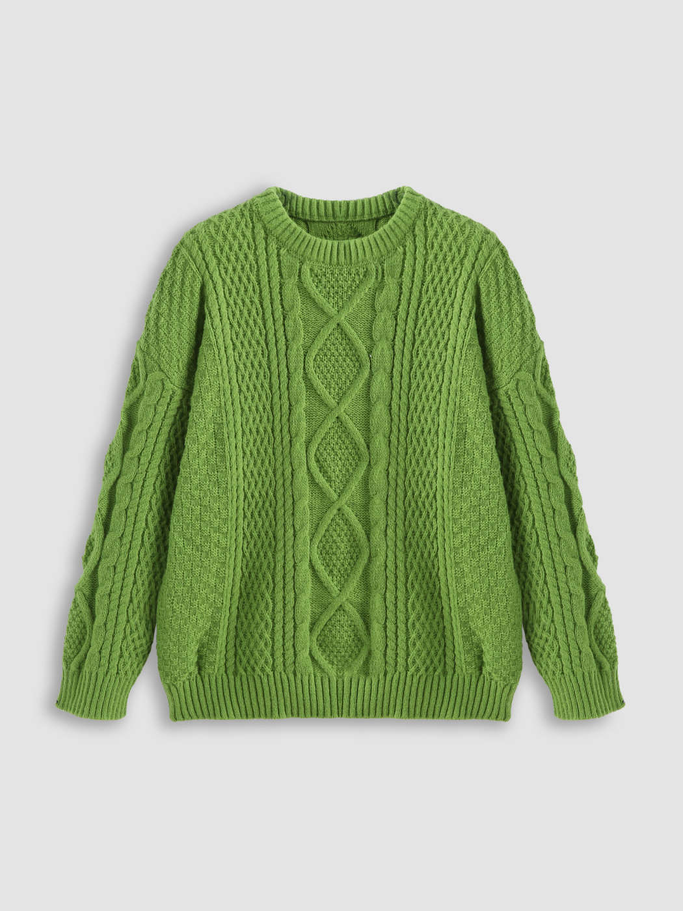

스웨터
스웨터를 올바르게 버리는 방법과 상태를 판별하는 팁을 확인해보세요.
기부로 이어진다면 환경을 보호하고, 도움이 필요한 사람들에게 따뜻함을 전달할 수 있습니다.
의류를 버리는 방법
- 기부 전에 세탁을 통해 스웨터를 깨끗하게 준비하세요.
- 의류 수거함에 넣을 때는 다른 물품과 섞이지 않도록 봉투에 담아 기부하세요.
- 의류 수거함 위치는 웹사이트를 통해 확인할 수 있습니다.
- 겨울철 의류는 특히 도움이 필요하므로, 따뜻한 스웨터와 같은 의류는 기부 우선 항목입니다.
수정 제안
의류 상태 판별 방법
- 손상된 부분이 없는지 확인하세요 (예: 구멍, 올 풀림).
- 심한 변색이나 얼룩이 없는지 검사하세요.
- 보풀이 많을 경우 제거하여 깔끔한 상태로 만드세요.
- 의류의 향을 맡아 불쾌한 냄새가 나지 않는지 확인하세요.
- 깨끗하고 재사용 가능한 상태라면 기부가 가능합니다.